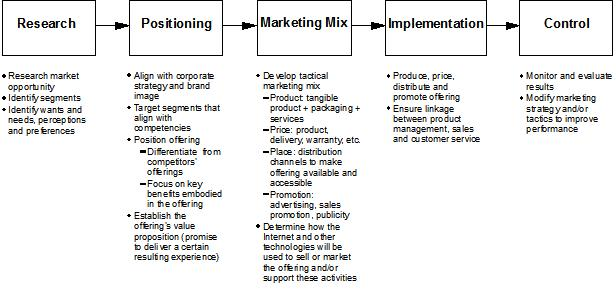

Product/service decision-makers for existing offerings must first decide where their offerings are now, before deciding
where they want them to be. New products and services will face different hurdles than existing offerings, but
the issues are fundamentally the same. The main difference is that decisions regarding new offerings will require more
market research and less “hard” evidence.
Five basic steps are required to develop a product/service marketing strategy, as shown in the following graphic:

A marketing audit may be conducted to assess the current situation. This audit may include a study of strengths
and weaknesses, such as the ones listed below:
Research
-
Are distribution channels optimized for lines of communication and for delivery of goods and services? Are the
channels the best ones for the product or service?
-
What are customers demanding? What are their expectations regarding the product/service and all competing
offerings?
-
Are there any political or legal issues facing the product/service? How might the offering run afoul of laws or
public opinion? How might it benefit from these factors?
-
Analyze the market structure to identify external environmental factors that might impact the success of the
offering.
Positioning
-
Is the product/service aligned with the broader mission of the organization?
-
Is the product or service defined so buyers can easily perceive value and the way it differs from competing
offerings?
-
What products and services compete against the offering? How can management optimize its position relative to the
competition?
-
Develop a clear mission statement for the team that is responsible for the success of the product or service,
ensuring that the mission is aligned with that of the larger organization.
-
Segment markets and prioritize them so that promotion efforts are leveraged to the greatest extent possible.
-
Understand to the greatest depth possible the behavior of buyers and their wants and needs. Formulate the value
proposition—and the underlying features—so that they are closely aligned with buyer desires.
-
Develop a clear positioning statement. How does management want buyers to perceive the product or service brand?
How do buyers currently perceive the brand? How can management close that gap? How does management plan to
differentiate the product or service from competing choices?
-
Create packaging plans. Whether the offering is tangible or not, it should be presented to buyers with an
associated aura. It should generate excitement and expectation prior to the buyer’s directly experiencing the
offer.
Marketing Mix
-
Are buyers sensitive to pricing for the offering? Is the brand strong enough to withstand efforts by competitors to
whittle away at market share through lower pricing?
-
Are sales promotions effective? How is the effectiveness measured? Are targeted marketing programs
required?
-
Perform gap analysis. Look realistically at the gaps between the current state and the desired goal. Define the
steps necessary to close the gaps.
-
Formulate promotion plans that are aligned with broader company plans. Leverage existing promotional efforts for
related products and services.
-
Establish service levels and guarantees. What will buyers expect?
-
Determine which distribution channels will best facilitate communication and logistics. Note potential channel
conflict with other company offerings.
-
Establish pricing policy.
Implementation
-
Are strategic partnerships required to effectively market the product or service?
-
What impact does technology have on the product/service? If it is a technology-based offering, what opportunities
or threats should be considered?
Control
-
Has management allocated sufficient resources to the product/service to maximize probabilities for success?
-
Is the cost structure for the offering clearly delineated so that management has a high confidence level regarding
ongoing production or processing costs?
-
What is the quality of after-sale service? What is the company’s reputation in this area? Does it need to be
improved? Can some of the services be cut without reducing customer loyalty? Is self-service a
possibility?
-
How will the economy affect the performance of the offering? How might management position the offering to succeed
in different economic situations?
-
What societal trends will affect the product/service? Do fads or deeper social movements affect the offering? How
might it benefit?
-
Determine the life cycle of the product or service. How long will it have an impact in the market? What is its
greatest revenue and profit potential? When is that most likely to happen? How can management leverage its
knowledge of the product life cycle to maximize overall product/service profitability?
-
Identify critical success factors that will make the offering successful. Success factors are virtually infinite.
“Critical” success factors often number less than ten.
|